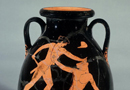
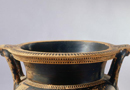
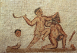
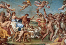

Theseus' Arrival in Athens and the Minotaur
When Theseus arrives in Athens he is not immediately recognized by his father. Aegeus is now married to Medea (whom we will encounter more prominently in the myth of Jason and the Argonauts), whom has fled to Athens after she killed her children. Medea recognizes Theseus as Aegeus’ son, but fears him as a rival to her own son Medus for the kingship of Athens. She therefore tells Aegeus to invite Theseus to a banquet and give him poisoned wine. Fortunately, however, at the banquet Theseus carves the meat with the sword he had found under the rock in Troezen. Aegeus therefore recognizes him at the last minute and knocks the cup from his hand. Theseus becomes his successor and he helps to defend Aegeus against his uncle Pallas, who is also vying for the throne.
As indicated above Theseus’ most famous labour is the killing of the Minotaur. Prior to this, he is also said to bring to Athens the Bull of Marathon, the same bull which Heracles was supposed to have brought from Crete. On his way to get this bull, he was hosted by an old lady Hecale, who was the focus of a poem by the Hellenistic author Callimachus. In this stories we see a very explicit connection between Heracles and Theseus.
Coming to the Minotaur, Theseus must kill the beast due to the following circumstances. Minos, the king of Crete, had attacked Athens after his son was killed out of jealousy by the Athenians, when he was victorious at the Panathenaic athletic games. Athens surrendered to Minos and made a treaty that it would send 7 young men and 7 girls to be food for the Minotaur. Minos was the son of Zeus and Europa (a myth with which we are already familiar). The Minotaur is named after Minos (in Greek ‘tauros’ means bull), because he was born to Minos’ wife Pasiphae. He was said to have prayed to Poseidon to send him a special bull to indicate support for his rule in Crete. Poseidon grants his wish, but Minos does not sacrifice the bull to Poseidon as he should. Poseidon therefore makes his wife fall in love with the bull and give birth to a human-bull hybrid after she has lain with the bull. The Minotaur is kept in Crete in a labyrinth.
Coming back to Theseus and the treaty later reached by the Athenians, the victims for the Minotaur were chosen by lot and sent every 9 years. In attempt to protect the Athenians, Theseus volunteers to go in order to kill the Minotaur. When Theseus arrives on Crete, Minos’ daughter Ariadne falls in love with him. Depending upon the version, Ariadne gives Theseus either a thread to trace his way back out of the Labyrinth in which the Minotaur lived, or a wreath to light his way. Theseus is therefore able successfully to kill the Minotaur and escape alive. The Minotaur, a half-human figure that has fascinated artists (such as Picasso) and authors alike for centuries, was frequently portrayed also in art. (see images 2–4)
It is notable that Theseus would not have been able to complete his task without the help of Ariadne (a motif that is found again in the myth of Jason and the Argonauts, in which Jason gains the golden fleece only with the help of Medea). And yet (again like in the story of Jason and Medea), Theseus does not treat her well after she helps him. Having betrayed her father, she makes Theseus promise to take her home with him. He does take her from Crete, but then abandons her on the island of Naxos before they reach Athens. She is there rescued by Dionysus, who becomes her lover.(see image 5) Other earlier versions of the myth make Ariadne a divine lover of Dionysus even before she meets Theseus. This is a story which has had a large impact in later centuries. Richard Strauss, for example, wrote a very well known opera named Ariadne auf Naxos (Ariadne on Naxos).
{kind=link}
{kind=link}
{kind=link}
{kind=link}
Theseus returns victoriously as a saviour to Athens, where he becomes king in place of his father, who dies tragically. Theseus had promised his father that if he were victorious he would change the sail of his ship on the way home from black to white. He forgets, however, to do so and his father Aegeus, believing that his son is dead, throws himself off a cliff into the sea in despair. It is from this myth that we have the etiology of the name of the Aegean sea. It is notable that Theseus, a hero and saviour of Athens, is not beyond mistakes and moral reproach. We will see a similar blend of characteristics when we look at Heracles.